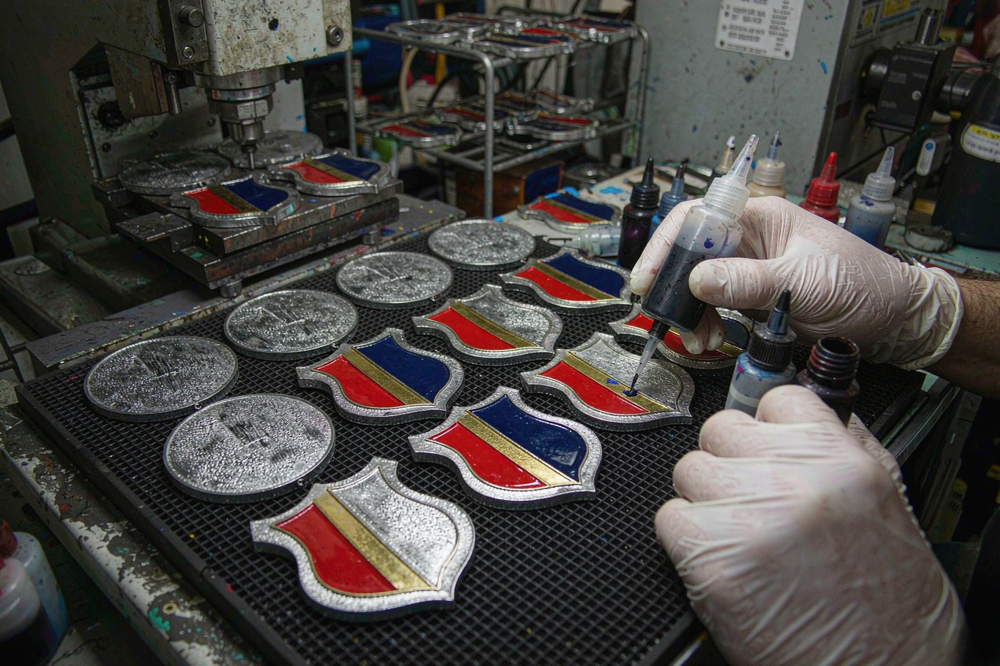
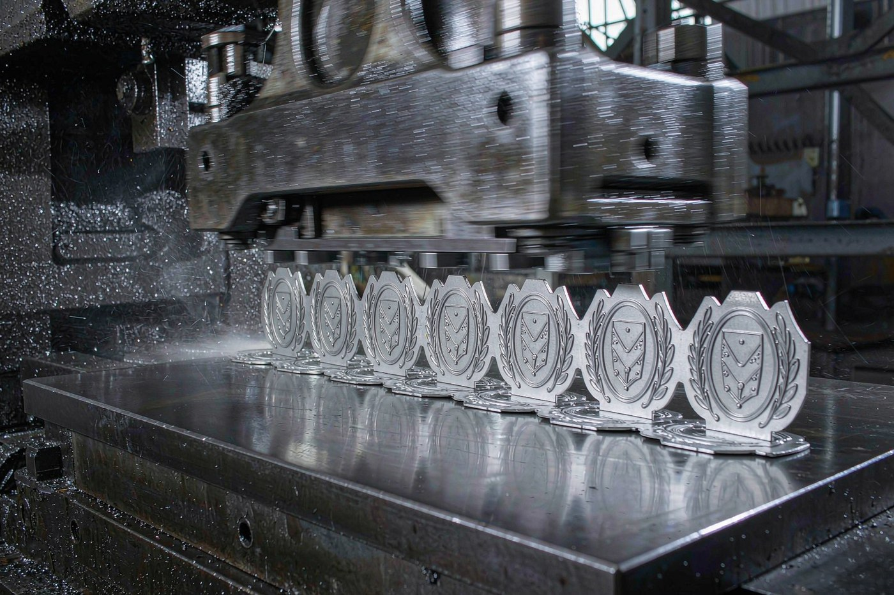
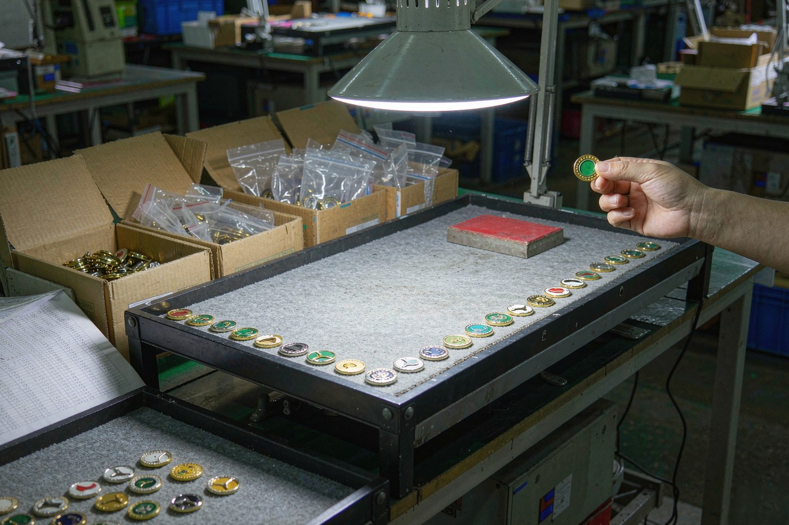

A club does not order one badge. It orders three, and it orders them for three different reasons that have almost nothing to do with each other. The membership badge goes on a jacket in October and comes off in February. The event badge is handed out at a table in the rain on a Saturday. The collector piece is traded at a meet and has to look like it belongs next to the ones already in someone else's case.
These three jobs want different sizes, different processes, different colour counts and different lead times. Specification is usually done as one lump, which is why the finished badge is often right for one of the three jobs and slightly wrong for the other two.
This is how we would break the programme down, what each piece needs, and which decisions are worth getting right before the artwork is drawn.

The three sets, and why they are specified separately
A membership badge is worn. It goes through a season of washing, a bag, a car seat and a washing machine, and it still has to look right at the end of it. Its job is to say something about the person wearing it, to anyone who looks.
An event badge is handed over and put in a pocket. Its job is to prove that this person was here on this day, and it only has to survive the day itself. What matters is the deadline, because the date is fixed and the badge has to be in someone's hand on it.
A collector piece is kept. It is going to be traded, photographed, put in a case and looked at closely by people who are collectors. Its job is to look specific, and that is the one that rewards detail, a heavier metal and a plating finish that was chosen rather than inherited.
| Membership badge | Event badge | Collector piece | |
|---|---|---|---|
| What it has to do | Be worn and washed, and still look right | Be handed out on a fixed date | Be kept, traded and looked at closely |
| Typical size | 25 mm to 30 mm | 25 mm to 35 mm | 35 mm to 50 mm |
| What carries it best | Hard enamel, on a butterfly clutch with a rubber cap | Hard enamel or offset print, packed loose in a carton | Die struck or 3D die cast in solid metal |
| Colour count | Two or three, held to Pantone | Two or three, held to Pantone | Metal finish only, or one colour against metal |
| Lead time | 7 to 10 business days after sample approval | 7 to 10 business days, 5 day rush where a window allows | 7 to 10 business days, and the schedule starts earlier |
| How it reaches the member | Polybagged, or on a backing card | Bulk carton, handed out or bagged on the day | Gift box with a fitted insert |
| What it repeats on | The archived mould, next season | Usually a new design per event | A series, so each piece differs slightly |

The membership badge: built to be washed
This is the piece that comes home in a coat pocket and goes in the wash. Two decisions do most of the work here, and neither of them is about the artwork.
The first is the backing. Every standard pin arrives with a butterfly clutch and a rubber PVC cap, and the cap is the part that stops the clutch marking a shirt or jacket. It is fitted as part of the standard build rather than as an extra, which is why most membership badges take the standard fitting without anyone having to ask. If the badge is heavier than a normal pin, or it is going on a coat rather than a shirt, we change it: safety pin, screw back, magnetic back or double clutch. The backing is chosen against the fabric and the weight together, because a clutch that holds a light enamel pin firmly on a shirt can work loose on a heavy badge.
The second is the metal. We stamp from 0.3 mm brass, 0.3 mm iron or 0.4 mm stainless steel, and those are the gauges that hold up to a season of wear. Stainless steel is the thickest of the three stamped sheets, so it carries a heavier pin and a sharper relief. Brass and iron are stamped at the same gauge and are the usual choice for hard enamel and soft enamel.
On size, 25 mm is the safe default because it is the most ordered size we run, and 30 mm is where you start getting full artwork with a name and a date on it. Under 22 mm you are down to a clean logo mark and short text on one line. The number to hold in your head is that on a 25 mm pin a capital letter should be at least 1.5 mm tall, which is roughly the height of a lowercase letter in 12-point type. Smaller than that and the letter survives the press but stops being readable on a lapel.
The event badge: the deadline is the specification
When the date is fixed, the question is not what to make, it is how many working days are left and which stage they go into. Here is the sequence and what each stage costs in time.
The CAD proof is free and comes back within 12 hours. It is the stage where the artwork is checked against what the press can actually hold, and it is where changes are cheap. The sample takes 3 to 5 business days and is the stage where colour, plating and the clutch get settled on a real object rather than on a render. Production runs 7 to 10 business days after sample approval, and a 5 business day rush is possible when a production window allows it.
Add those up and a first-time order with a fixed date needs the proof stage to start early, not the artwork stage. The artwork can change twice while the sample is in the workshop, because the mould is not opened until the proof is approved.
On the artwork itself, an event badge is the easiest of the three to keep simple. It only has to survive a day and be readable at arm's length. Two or three colours held to Pantone, a crest that carries as a silhouette, and text at or above the cap height for its diameter. Everything beyond that is detail on a piece that will spend most of its life in a coat pocket.
The team crest: check whether it can be cut at all
A crest is the hardest artwork in this article, because club and team badges usually arrive as a detailed logo with a shield, a banner, a laurel wreath and a motto. Before any of that goes near a mould, it has to survive three rules that come from the metal rather than from preference.
Lines have a floor of 0.3 mm. That is the thinnest sheet we stamp from, and a metal line narrower than the sheet it is stamped from does not survive the press, it tears. A 0.3 mm line is physically possible and visually fragile: it reads as a hairline on a worn lapel and it is the first thing to disappear if the plating is slightly heavy. If a crest has a critical outline, we would rather see it at 0.5 mm and above.
Colour areas have a floor of 0.3 to 0.4 mm, with more room around tight negative shapes. Where two colours meet, allow at least 0.3 mm of bare metal between them, because the enamel on either side moves when it is lapped flat. This is the rule that catches a crest with a motto squeezed between two ribbons.
Sharp corners inside a colour area have to be radiused. Enamel shrinks slightly as it cools and is ground flat on a lapping stone, and acute internal corners are where that movement shows. Radiusing the inside corners of a colour area by a small amount is the single cheapest fix in this list.
And one thing that is not possible at all in enamel: a gradient. Enamel is a solid, matched-to-Pantone liquid material and it does not blend, so a gradient across a colour area has to be resolved into discrete bands, and on a pin small enough to wear those bands either show visible steps or disappear entirely. If the artwork needs a gradient, offset printed is the process that can hold it.
The design file specifications page has the full pre-flight list, including the file formats we can cut from and the three things we cannot produce.
Size: what it is worn on decides more than the artwork
The same crest is a different badge at 22 mm and at 40 mm, and the question that settles it is where it is going.
On a shirt the badge is small and the clutch has to be gentle. 22 mm carries a clean logo mark with short text on one line, and nothing more.
On a jacket or a coat the badge can be heavier and larger. 30 mm is the size where the artwork can carry a name and a date, and 35 mm is the size our own chart calls club badges and organisation marks, with detailed multi-element artwork.
On a cap the constraint is the backing rather than the artwork. A cap panel is a stiff, curved surface, so a safety pin or a screw back usually holds where a butterfly clutch would work its way out.
For a collector series, size goes up and detail goes with it. 50 mm is where fine line work survives, and 60 mm and above is where full illustrations with fine engraving hold. The lapel pin sizes guide has the full chart, from 14 mm up.
Colour and plating: two club colours, not six
Two or three colours is what most club badges should be specified at, and the reason is not a limit on how many colours we can run. It is that each colour area has to be large enough to be filled and then ground back without disappearing, and small detail is what breaks first.
Give us Pantone references and we hold that standard for the whole run. Colours not held to a Pantone standard are matched to the sample you approve, which is why we always ask for a physical sample first.
For a collector piece, the metal finish does the work instead of enamel, and there are twelve plating options to choose from. It is worth being precise about what those are: bright, matte and antique are surface treatments, not different metals. Plated on hard enamel, the plating thickness is 0.2 to 0.5 microns over a copper strike, and every rack is XRF tested before it leaves the workshop, so lead and cadmium content is verified by measurement rather than by paperwork.

Quantity: a small club order is not a small factory order
There is no minimum order quantity. A single piece is a legitimate sample order, and it is produced on the sample bench in a few days with no production slot required. A small batch runs alongside other work in the current production window and takes the standard lead time. From there it is the normal progression: mid volume on the standard production window, high volume scheduled as a dedicated run with capacity reserved against your delivery date.
The reason this matters for clubs and teams is that the tooling, not the quantity, is what changes the economics. The mould is cut in our tooling shop and archived for three years, so a repeat order runs on the archived mould with no new tooling cost and the schedule starts at production. A club that orders the same membership badge every season pays the tooling stage once.
The other thing that changes with volume is sampling. Up to mid volume, one sample before release. At high volume, one sample plus a pre-production check on the first produced pieces. And on a repeat order, sampling is optional, because the specification has already been proven.
One programme, several schedules
A programme with a membership badge, an event badge and a collector piece is usually specified as three separate orders. It does not have to be. They run on the same presses, the same plating line and the same inspection bench, so a merchandise programme can cover more than one product in one schedule. Each design still has its own mould, but the order, the inspection and the shipment are one.
The practical sequencing is this: fix the membership badge first, because it is the piece that repeats and it defines the club's colours and its crest. The event badge follows the club colours. The collector piece comes last, because it is the one that needs the most time to be right.
Getting the pins to the members
Packaging is a real cost and a real decision, so we ask about it early rather than choosing it for you. Five ways to pack pins are available.
A single polybag is every pin bagged individually. It is the default for bulk distribution and the cheapest option per unit. A blister on a backing card gives a retail-ready card per pin, suitable for shelves and for programmes where the pin is sold individually. A header bag with your card puts your own printed header card in a sealed bag, with your branding and barcode. A gift box is a presentation box with a fitted insert, used for sets, collector series and premium gifting. Bulk carton packing is packed loose into export cartons for your own distribution centre or fulfilment partner.
For distributor programmes we can blind drop-ship, so the cartons carry your branding and none of ours. For a club shipping to individual members, that is usually the difference between a carton that arrives at one address and a carton that arrives at four hundred.
Working back from the date
Here is the order to do things in when the date is fixed. Take the working days you have, and count backwards.
The production run is 7 to 10 business days after sample approval, or 5 for a rush where a window allows. Before that comes the sample, 3 to 5 business days, and before that the proof, free and returned within 12 hours. Before that is the artwork, which is the only stage with no clock on it.
So the artwork is where you start, and the thing to avoid is treating the sample stage as the start of the clock. A club that brings artwork two weeks before the event has room to change its mind twice; a club that brings artwork three days before does not.
The bulk order guide covers the payment nodes and who is responsible for what at the border, and the trade terms guide covers which term to put on the order.
What to send
Four things, and the fourth is the one people leave out. Send the artwork, the quantity, the delivery date, and a note of where the badge is going to be worn. That last one decides the backing, and the backing is what decides whether the badge stays on.
You get a 2D and 3D CAD proof with an itemised quotation within 12 hours, and there is no minimum order quantity at any stage. If you would rather see a real object before committing to a run, a one-piece sample is the fastest way to settle plating, colour and fitting, because a flat render does not show how a finish catches light.
Questions clubs and teams ask
No. There is no minimum order quantity at any stage, so a single piece is a legitimate sample order and a small club order is scheduled the same way as a large one. A single piece is produced on the sample bench in a few days with no production slot required, and it is cut on the tooling that the production run will use. The sample cost is credited against the production order.
Standard production runs 7 to 10 business days after sample approval, and a 5 business day rush is possible when a production window allows it. Add the CAD proof stage, which is free and returned within 12 hours, and the sample stage, which takes 3 to 5 business days. A first-time order with a fixed date should start at the proof stage rather than at the artwork stage.
Not in enamel. Enamel is a solid, matched-to-Pantone liquid material and it does not blend, so a gradient has to be resolved into discrete bands, and on a pin small enough to wear those bands either show visible steps or disappear. A photograph on a 25 mm pin gives you a very small image to begin with, and faces and fine textures lose their identity long before the press does anything to them. If the artwork needs a gradient or a photograph, offset printed is the process that can hold it.
The proof stage is where changes happen and it is free. We produce 2D and 3D CAD proofs and the changes are made against those files before the sample is cut, so the mould is only opened once the artwork is settled. Tell us what is still moving in the design and we will sequence it so the proof round and the sample round happen together where the timeline allows.
No. Repeat orders run on the archived mould. There is no re-tooling stage, so the schedule starts at production rather than at the proof. Moulds cut in our tooling shop are archived for three years, and the existing mould is reused with no new tooling cost. If the design changes, that is a new mould and a new run.
Packaging is a real cost and a real decision, so we ask about it early rather than choosing it for you. Five ways to pack pins are available: every pin bagged individually in a single polybag, a blister on a backing card, your own printed header card in a sealed bag with your branding and barcode, a gift box with a fitted insert for sets and collector series, or packed loose into export cartons for your own distribution centre or fulfilment partner. For distributor programmes we can blind drop-ship, so the cartons carry your branding and none of ours.
Colour is matched to Pantone references and we hold that standard for the whole run. The practical limit is not the colour count but the size of each colour area: the floor is 0.3 to 0.4 mm for the visible edge of a colour area, and when two colours meet you need at least 0.3 mm of bare metal between them, because the enamel on either side moves when it is lapped flat. That is why most club crests are specified at two or three colours rather than six.